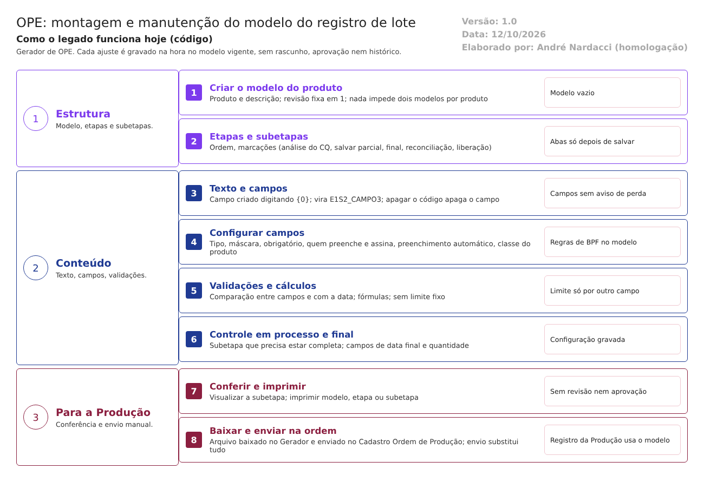

Objetivo
Este documento descreve como o modelo do registro de lote de um produto é montado e mantido no Gerador de OPE. Esse modelo define tudo o que o operador vê e preenche no Registro da Produção: - as etapas e subetapas; - o texto das instruções; - os campos, com o que é obrigatório e quem assina; - as validações e os cálculos; - o controle em processo; - de onde vêm a data final e a quantidade produzida.
Pela norma, a fórmula e as instruções de fabricação de cada produto são documentos aprovados (RDC 658/2022, arts. 133 a 135), e qualquer mudança só vale depois de aprovada (arts. 176 e 177). O modelo do registro de lote é, na prática, as instruções de fabricação dentro do sistema.
Foi montado a partir do código do sistema legado. O que depende da prática da área está marcado como a validar. A seção "Por que o módulo confunde o usuário" reúne as dificuldades de uso com evidência das telas. Os casos de teste estão no fim.
Escopo
- Criação do modelo de um produto, etapas e subetapas.
- Texto da instrução e criação dos campos.
- Configuração de cada campo, validações e cálculos.
- Controle em processo e dados do final da produção.
- Subetapas-padrão (tela Modelos).
- Impressão, baixa e envio do arquivo e a ida do modelo à Produção.
Fora do escopo: o uso do modelo no Registro da Produção (fluxo 2 da Produção) e o cadastro da ordem de produção (fluxo 3 da Produção).
Nomes das telas: como aparecem no alto de cada tela. Os caminhos de código são relativos a 9.ope/app/. Para encurtar: Repo/ = HSolutions.GeradorXML.ORM/Repository/, Views/ = HSolutions.GeradorXML.UI/Views/, Prod/ = 2.producao/app/LaboSys_UI/producao/XML/Class_Producao/.
Visão geral do processo

- No Gerador de OPE, cria-se o modelo do produto.
- Cadastram-se as etapas e, em cada uma, as subetapas.
- Em cada subetapa, escreve-se o texto da instrução. Cada campo a preencher é criado digitando o código
{0}no ponto do texto. - Cada campo é configurado: tipo, máscara, obrigatório, quem preenche, quem assina, preenchimento automático.
- Acrescentam-se validações e cálculos entre campos.
- Definem-se o controle em processo de cada etapa e os campos do final da produção.
- O modelo é conferido (visualizar, imprimir) e o arquivo é baixado e enviado na ordem de produção da Produção.
Cada ajuste é gravado na hora no modelo vigente. Não há rascunho, revisão nem aprovação em nenhum passo.
Descrição funcional das etapas
1. Criar o modelo do produto
Regras de negócio
- RN001 – O modelo exige produto e descrição (
HSolutions.GeradorXML.ORM/Validation/GeradorXMLValidation.cs:18-29). O produto vem do cadastro da Produção, só os ativos (Repo/GeradorXMLRepository.cs:211-222). - RN002 – O modelo nasce vazio, com revisão "1" (
Repo/GeradorXMLRepository.cs:224-239). A revisão nunca muda depois: não há outro ponto do código que a altere. - RN003 – Nada impede dois modelos para o mesmo produto. A tabela não tem restrição de produto único (
Scripts/TBL_GERADORXML_PRODUTO.sql), e a validação só confere o preenchimento. A confirmar no teste. - RN004 – A lista busca por número, descrição do modelo ou nome do produto (
Repo/GeradorXMLRepository.cs:111-138). - RN005 – Não há exclusão do modelo: a tela não tem esse botão, e a tabela não tem exclusão lógica.
Telas do sistema
| Módulo | Tela | Finalidade |
|---|---|---|
| OPE | Gerador de OPE (lista) | Procurar os modelos |
| OPE | Gerador de OPE (cadastro) | Criar o modelo; ver as etapas; baixar, enviar e imprimir |
2. Montar etapas e subetapas
Regras de negócio
- RN006 – A etapa tem número, nome e ordem. A ordem muda pelas setas, que trocam a etapa de lugar com a vizinha (
Repo/EtapaRepository.cs:41-62). - RN007 – A exclusão de uma etapa apaga a etapa e todas as subetapas e campos dela, depois de uma pergunta de confirmação (
Views/GerarXML/Edit.cshtml:177-187;Repo/EtapaRepository.cs:123-141). Não confere se a etapa é usada no controle em processo de outra. - RN008 – Etapa e subetapa têm marcações que mudam o Registro da Produção:
- na etapa: se possui controle de processo, se é um controle de processo e a "Permissão Para Entrar na Etapa" (
HSolutions.GeradorXML.Model/ConfigEtapa.cs:25-32); - na subetapa (
HSolutions.GeradorXML.Model/ConfigSubEtapaModel.cs:34-63):- a permissão;
- os "Pré-requisitos à validar";
- se pede análise ao CQ;
- se habilita o botão salvar parcial e o envio de arquivo;
- se é a subetapa de finalização, de reconciliação ou de liberação;
- os campos de data e hora de início e de fim.
- RN009 – As abas de texto, validações, cálculos e ambientes só aparecem depois de salvar a subetapa pela primeira vez (
Views/SubEtapa/Edit.cshtml:25-31,display:none).
Telas do sistema
| Módulo | Tela | Finalidade |
|---|---|---|
| OPE | Configurar Etapa | Nome, ordem e subetapas da etapa |
| OPE | Configurar (nome da subetapa) | Dados e marcações da subetapa; abas de texto, validações, cálculos e ambientes |
3. Escrever a instrução e criar os campos
Regras de negócio
- RN010 – O texto da instrução é escrito num editor de texto com formatação (aba "Gerador Html"), com opção de impressão em paisagem (
Views/SubEtapa/_GeradorHTMLPartial.cshtml). - RN011 – Cada campo é criado digitando
{0}no texto. Ao salvar, o sistema troca cada{0}por um nome técnico, como{E1S2_CAMPO3}(etapa 1, subetapa 2, campo 3), e cria o campo como caixa de texto de 100 pixels (HSolutions.GeradorXML.Model/TelaXML.cs:171-199). - RN012 – Apagar o código de um campo do texto apaga o campo e toda a configuração dele, sem aviso (
Repo/SubEtapaRepository.cs:475-494). O que dependia do campo (validações, cálculos, controle em processo, final da produção) não é conferido. A confirmar no teste: o que acontece com essas ligações. - RN013 – O botão que mostra o código-fonte do texto só aparece para quem tem a função própria (
BTNCODIGOFONTE) (HSolutions.GeradorXML.Model/GeradorHTMLPartialPartil.cs:20-37).
Telas do sistema
| Módulo | Tela | Finalidade |
|---|---|---|
| OPE | Configurar (subetapa), aba Gerador Html | Texto da instrução e criação dos campos |
4. Configurar cada campo
Regras de negócio
- RN014 – Cada campo tem (
HSolutions.GeradorXML.Model/ConfigCamposModel.cs:28-81;Views/Campos/Edit.cshtml): - tipo (caixa de texto, lista, marcação, opção);
- máscara (data, hora, data e hora, inteiro, decimal de 1 a 6 casas, percentual, telefone, registro);
- obrigatório e desabilitado;
- tamanho em pixels.
- RN015 – Quem preenche e quem assina. Duas configurações escolhem na mesma lista de funções profissionais do Principal (
Repo/PermissaoRepository.cs:15-40;Repo/CampoRepository.cs:105, 132): - "Permissão para Acessar o campo";
- "Função Profissional", junto com "Habilitar Icone de Autenticação", que pede a senha no campo.
No Registro da Produção, quem não tem a função recebe "NÃO TEM PERMISSÃO." (Prod/Autenticacao.cs:14-44). Ponto para validar: a diferença exata entre as duas configurações. A tela não explica.
- RN016 – Preenchimento automático: o campo pode trazer dados de outros cadastros. Por exemplo, número da OPE, lote, versão, revisão, validade, usuário que gerou o lote, responsável da GQ, registro na ANVISA, descrição do produto, listas de usuários, equipamentos, produtos e ambientes (HSolutions.GeradorXML.Helpers/DropEnum.cs:57-108).
- RN017 – Integração com o Estoque: o campo pode ser ligado a um insumo e a um dado da pesagem (lacre, tara, lote, responsável, peso líquido) (Prod/Enum.cs:82-95).
- RN018 – Classe do Produto: a lista oferece só três classes programadas: DIAZEPAM, Glibenclamida_OP e Glibenclamida_OPE (HSolutions.GeradorXML.Helpers/ClassEnum.cs:12-17). Um produto novo não tem classe própria. O comportamento programado (cálculos e validações especiais) só existe para esses produtos.
- RN019 – Ao salvar um campo, só as configurações alteradas são gravadas (Repo/CampoRepository.cs:186-313).
Telas do sistema
| Módulo | Tela | Finalidade |
|---|---|---|
| OPE | Configurar Campos | Tipo, máscara, obrigatoriedade, quem preenche e assina, preenchimento automático |
| OPE | Selecionar Insumos | Ligar o campo a um insumo |
| OPE | Selecionar Permissões | Escolher as funções profissionais |
5. Validações e cálculos
Regras de negócio
- RN020 – Funções de validação (aba própria) (
Prod/Enum.cs:37-79;Prod/ValidarSalvar.cs): - data ou data e hora maior ou menor que a do sistema;
- comparar dois campos de data, de data e hora ou de número (maior, maior ou igual, menor, menor ou igual);
- campos iguais;
- preenchimento obrigatório só se outro campo estiver preenchido;
- data posterior à geração do lote.
Cada função tem a mensagem que o operador verá.
- RN021 – Não há validação contra um valor fixo (mínimo e máximo da especificação). Para conferir um limite, seria preciso um segundo campo com o valor do limite (RN020). Ponto para validar: se a área faz assim.
- RN022 – Fórmulas de cálculo: o resultado de uma fórmula entre campos vai para um campo de retorno, com opção de média. A fórmula é conferida antes de salvar (Controllers/SubEtapaController.cs:207-247).
- RN023 – Parâmetros de entrada: um campo pode receber o valor de um campo de outra etapa ou subetapa (Controllers/CamposController.cs:40-43).
Telas do sistema
| Módulo | Tela | Finalidade |
|---|---|---|
| OPE | Configurar (subetapa), abas Funções de Validação e Fórmulas de Cálculo | Validações e cálculos entre campos |
6. Controle em processo e final da produção
Regras de negócio
- RN024 – O controle em processo de uma etapa indica qual subetapa precisa estar completa para avançar (
Repo/ControleProcessoRepository.cs:59-88). Não há outro critério: é o que a Produção confere (fluxo 2 da Produção, RN019). Um controle usado por uma etapa não pode ser excluído (HSolutions.GeradorXML.ORM/Validation/ControleProcessoValidation.cs:17-23). - RN025 – A tela Finalizar Produção define quais campos dão a data final, a quantidade produzida e a unidade, além do valor da amostra e do volume (
Repo/FinalizarProducaoRepository.cs:20-60). Esses dados alimentam o Final da Produção e o envio ao Estoque.
Telas do sistema
| Módulo | Tela | Finalidade |
|---|---|---|
| OPE | Configurar Validações de mudança de Etapa/Subetapa | Controle em processo |
| OPE | Finalizar Produção | Campos do final da produção |
7. Subetapas-padrão (Modelos)
Regras de negócio
- RN026 – A tela Modelos guarda subetapas-padrão, com o mesmo editor (
Repo/ModeloRepository.cs; tabelaPRD_MODELO_XML). - RN027 – Ao aplicar um modelo a uma subetapa, o sistema substitui o texto e os campos da subetapa pelos do modelo e renomeia os campos (
Repo/SubEtapaRepository.cs:353-391). - O que a subetapa tinha é perdido, sem aviso.
- É uma cópia: mudanças posteriores no modelo não chegam aos produtos.
- A confirmar no teste: se as validações e os cálculos do modelo vêm junto (o código copia só o texto e os campos, linhas 366-367).
Telas do sistema
| Módulo | Tela | Finalidade |
|---|---|---|
| OPE | Modelos e Modelo | Criar e editar subetapas-padrão |
8. Conferir e levar o modelo à Produção
Regras de negócio
- RN028 – Visualizar mostra a subetapa como o operador vai vê-la. Imprimir gera o modelo inteiro, uma etapa ou uma subetapa (
Controllers/GerarXMLController.cs:110-142). - RN029 – Baixar entrega o arquivo XML com o nome do produto (
Controllers/GerarXMLController.cs:70-74). - RN030 – Enviar arquivo (tela Upload) substitui o modelo inteiro pelo arquivo, sem conferir se é do mesmo produto e sem guardar o anterior (
Repo/GeradorXMLRepository.cs:273-284). Se der erro, a resposta é só "Error" (Controllers/GerarXMLController.cs:76-97). - RN031 – Não há envio direto à Produção. O arquivo baixado é enviado na tela Cadastro Ordem de Produção (fluxo 3 da Produção, RN024). Daí em diante, o Registro da Produção lê o modelo da ordem a cada abertura (RN025 daquele fluxo).
Telas do sistema
| Módulo | Tela | Finalidade |
|---|---|---|
| OPE | Visualizar XML; Imprimir; Upload | Conferir, imprimir, enviar arquivo |
| Produção | Cadastro Ordem de Produção | Receber o arquivo na ordem |
Por que o módulo confunde o usuário
A pessoa que monta o modelo é da Produção ou da Garantia da Qualidade, não programadora. O código mostra várias escolhas que só fazem sentido para quem programou o sistema.
| # | O que o usuário encontra | Por que confunde | Evidência |
|---|---|---|---|
| U1 | O campo é criado digitando {0} no texto |
Não há botão "inserir campo". Quem não sabe do código não cria campos. Depois de salvar, o {0} vira {E1S2_CAMPO3}, um nome técnico |
RN011 |
| U2 | Apagar um trecho do texto apaga campos | Um ajuste de redação pode apagar campos já configurados, sem aviso | RN012 |
| U3 | Os campos são chamados por nomes técnicos | Validações, cálculos, controle em processo e final da produção pedem para escolher E1S2_CAMPO3, não "Peso médio". O nome amigável existe, mas o rótulo dele na tela aparece como NomeAmigavel, sem tradução |
Views/Campos/Edit.cshtml:63 (rótulo sem nome de exibição em ConfigCamposModel.cs:32) |
| U4 | "Classe do Produto" lista nomes de programas | DIAZEPAM, Glibenclamida_OP, Glibenclamida_OPE. Para outro produto, nenhuma opção serve |
RN018 |
| U5 | Duas configurações parecidas para "quem pode" | "Permissão para Acessar o campo" e "Função Profissional" escolhem na mesma lista, com efeitos diferentes que a tela não explica | RN015 |
| U6 | Campos que aparecem e somem | A tela de campo mostra ou esconde partes conforme o tipo escolhido. As abas da subetapa só aparecem depois de salvar. O usuário não sabe o que ainda falta configurar | RN009; Views/Campos/Edit.cshtml (mais de 15 blocos com display:none) |
| U7 | Termos técnicos | "Gerador Html", "Parâmetro Entrada", "Método Pré-definido", "Tamanho do Campo" em pixels ("Exemplo: 100px"), "Definir Grupo" | ConfigCamposModel.cs:33-79; Views/Campos/Edit.cshtml |
| U8 | "OPE" quer dizer duas coisas | No Gerador, "OPE" é o modelo ("Tela de inclusão/edição da OPE", "Descrição OPE"). Na Produção, OPE é a ordem de produção de um lote | Views/GerarXML/Edit.cshtml:229; Produção, fluxo 1 |
| U9 | Dois editores iguais | Gerador de OPE e Modelos usam as mesmas telas. O que está sendo editado depende do que foi aberto por último, guardado na sessão | HSolutions.GeradorXML.Base/BaseController.cs:20-50 |
| U10 | Sem menu próprio | O menu do módulo está comentado; só há "Módulos". A tela inicial pula direto para o Gerador | Views/Shared/_Menu.cshtml:3 |
| U11 | Gravação sem "salvar" final | Cada ajuste já altera o modelo em uso. Não há como experimentar e desistir | Reconhecimento, seção 3 |
| U12 | Mensagens pouco claras | Erros com o título em inglês "Error." e envio de arquivo que responde só "Error" | Views/SubEtapa/_GeradorHTMLPartial.cshtml:114; RN030 |
| U13 | Ajuda parcial | Há texto de ajuda em 10 telas (9 do editor e a lista de módulos), mas ele lista botões, sem explicar o processo. As abas da subetapa (validações, cálculos, texto) não têm ajuda | Busca por Detalhamento( nas telas |
Leitura: a ferramenta foi feita para a equipe do fornecedor montar os modelos, não para a área. Pelo código, um usuário da empresa precisa de treinamento técnico para montar um modelo sem erro. Ponto para validar com a área: quem montou os modelos existentes (o fornecedor ou a empresa).
Pontos de atenção
1. As instruções de fabricação mudam sem aprovação (RN002, reconhecimento, seção 3). Cada ajuste altera o modelo vigente, sem rascunho, revisão, aprovação nem histórico (arts. 133 a 135, 176 e 177).
2. Um ajuste de texto pode apagar campos do registro de lote (RN012), e o envio de arquivo substitui tudo (RN030). Nos dois casos, sem aviso e sem cópia do anterior.
3. As regras de BPF do registro estão no modelo, sem conferência de quem decide: o que é obrigatório, quem assina, o que trava a etapa (RN014, RN015, RN024). Um erro de configuração vira um registro de lote sem a assinatura ou o controle que a norma pede.
4. Limite de especificação só por comparação entre campos (RN021). O mínimo e o máximo do produto não são um dado próprio do modelo (art. 198).
5. Produtos novos sem o comportamento programado (RN018). O que for específico do produto precisa de programador.
6. Difícil de usar (seção anterior). Isso aumenta o risco de erro de configuração (ponto 3) e a dependência de quem conhece o código.
Casos de teste
Dados:
- Um produto TESTE ativo na Produção.
- Usuários t.admin e t.semadmin.
- Um modelo TESTE criado no caso CT-OPE-001 e reaproveitado nos demais.
| Caso | O que fazer | Resultado esperado |
|---|---|---|
| CT-OPE-001 | Criar o modelo TESTE para o produto TESTE |
Modelo criado, sem etapas; revisão 1 (RN001, RN002) |
| CT-OPE-002 | Criar um segundo modelo para o mesmo produto TESTE |
Registrar se permitir (RN003) |
| CT-OPE-003 | Criar uma etapa com duas subetapas; trocar a ordem das etapas | Ordem trocada (RN006) |
| CT-OPE-004 | Numa subetapa, escrever um texto com dois {0} e salvar |
Dois campos criados com nomes técnicos (RN011, U1) |
| CT-OPE-005 | Configurar um campo como obrigatório, decimal com 2 casas e com a assinatura de uma função profissional | Configuração gravada (RN014, RN015) |
| CT-OPE-006 | Apagar do texto o código de um campo já configurado e salvar | Pela boa prática, aviso antes de apagar. Registrar se apagar o campo sem aviso (RN012, ponto 2) |
| CT-OPE-007 | Criar uma validação "comparar números" entre dois campos | Gravada com a mensagem (RN020) |
| CT-OPE-008 | Procurar uma forma de validar um campo contra um valor fixo (por exemplo, mínimo 95) | Registrar se não existir (RN021, ponto 4) |
| CT-OPE-009 | Criar uma fórmula com uma expressão inválida | Recusa na conferência da fórmula (RN022) |
| CT-OPE-010 | Definir o controle em processo de uma etapa e tentar excluir esse controle | "Esta validação não pode ser excluída pois está em uso na etapa." (RN024) |
| CT-OPE-011 | Definir na tela Finalizar Produção os campos de data final e quantidade | Gravado (RN025) |
| CT-OPE-012 | Criar um modelo de subetapa e aplicá-lo a uma subetapa que já tem texto e campos | Registrar se o conteúdo anterior foi substituído sem aviso e se as validações vieram junto (RN027) |
| CT-OPE-013 | Baixar o arquivo do modelo TESTE; alterar a descrição de um campo no arquivo; enviar de volta |
Modelo substituído. Registrar se houve erro ("Error") e se o anterior foi guardado (RN029, RN030) |
| CT-OPE-014 | Enviar o arquivo do modelo de outro produto no modelo TESTE |
Pela boa prática, recusa. Registrar se aceitar (RN030) |
| CT-OPE-015 | Abrir o modelo TESTE numa aba e outro modelo em outra aba; alterar um campo na primeira aba |
Registrar em qual modelo a alteração foi gravada (U9; reconhecimento, ponto 4) |
| CT-OPE-016 | Procurar a revisão, o aprovador e o histórico do modelo TESTE depois das alterações |
Registrar a ausência (RN002, ponto 1) |
| CT-OPE-017 | Enviar o arquivo do modelo TESTE numa ordem de produção TESTE (Produção) e abrir o Registro da Produção |
O registro mostra o modelo montado (RN031) |
| CT-OPE-018 | Com uma produção TESTE iniciada, mudar um campo de obrigatório para não obrigatório no Gerador, baixar e reenviar na ordem |
Registrar se a produção em andamento mudou (ponto 1; fluxo 3 da Produção, CT-PRO-052) |
| CT-OPE-019 | Com t.semadmin, abrir o Gerador de OPE pelo endereço |
Acesso negado. Registrar se abrir |
| CT-OPE-020 | Pedir a um usuário da área, sem explicação prévia, que crie um campo de data obrigatório numa subetapa | Registrar quanto tempo levou e onde travou (seção "Por que o módulo confunde") |
Prioridade (testes por risco): CT-OPE-016, 018, 006, 013, 008 e 015 primeiro. Eles tocam: - as instruções de fabricação alteradas sem aprovação nem histórico; - a mudança que atinge produção em andamento; - a perda de configuração sem aviso; - o limite de especificação ausente; - a alteração gravada no modelo errado.